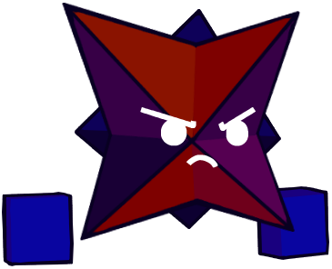
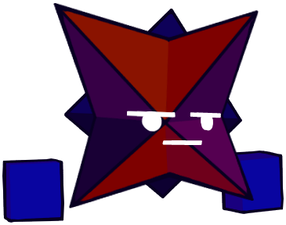
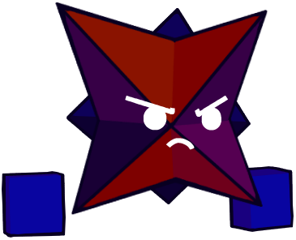
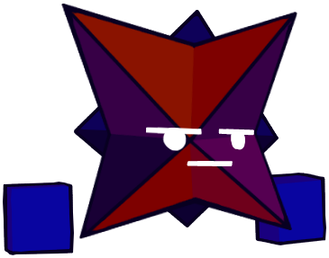

VS. WINDOWSGOD2
Welcome to the official vs. WindowsGod2 website!
Here you can find downloads for the mod, previous builds, AND upcoming builds for future updates!
Mod Information
About
Vs. WindowsGod2 is a Friday Night Funkin' mod created by WindowsGod2 to add lore to his OC, Windo. He figured he would gain more popularity if he made his mod for the game.
History
The first instance of this mod being worked on was on October 7th, 2021, when the first track was made for it. Though, at the time, the mod was not a final decision and was made for fun. Another track was made on October 19th, 2021.
On November 2nd, 2021, a storyline for the possible mod about Windo was made. It would have five weeks centered around the idea of depression, and visualizing it with inspiration from We've Destroyed All The Hope In This World. Three days later on November 5th, 2021, two game over tracks were made. Two days after that, another main track would be made.
Five new tracks were made for the mod between November 20th, 2021, and February 7th, 2022. One of those is Reminiscence on December 16th, 2021, the earliest track to be made that currently appears in the mod.
On February 11th, 2022, the discord server for the mod would be created, officially making this mod a reality. From this point forward until March 10th, 2023, the mod would undergo production and hiatuses. Finally, on March 10th, 2023, the official demo of the mod was released on GameBanana, along with its official soundtrack. Between the mod's official conception and demo release, forty-two tracks were made, signifying there will be a lot of content in the upcoming updates.
Some time after weeks 2 & 3 released, the storyline shifted slightly from being based on depression to being entirely around Windo being overtaken by a previous foe he defeated in the past.
Version Changes
The first minor update to the mod was released as "Demo 1.01" on May 11th, 2024, where some assets were changed.
The second minor update was released as "Demo 1.02" on May 20th, 2024. This new update moves to Psych Engine 0.7.3, and adds new Geometry Dash assets, and Dialogue to the first and only week of the demo.
The third minor update was released as "Demo 1.03" on June 19th, 2024. This update mainly has bug fixes, more changed assets, new credits, and tweaked dialogue.
The last minor update to the mod was released as "Demo 1.04" on October 6th, 2024. This update includes changes to the note assets, new dialogue sprites for Windo, more BGM tracks for dialogue cutscenes, tweaks to the dialogue, fixed some asset positions, and marked Week 1 as "easy" in difficulty.
The first major update, "2.03," was released on November 27th, 2024. It included two new weeks, each containing three new songs. Additionally, the mod moved from Psych Engine 0.7.3 to Psych Engine 1.0.
Mod Downloads
Full Releases
-
Ver. 2.03 (2024-11-27) (Latest)
Ver. 2.03 (32-Bit) (Latest)
Demo Releases
Builds
Monday Night Mashin'
Monday Night Mashin' is a reskin and remix mod created by HeckinLeBork and ported by WindowsGod2.
-
Version 0.386 (Latest)
Character Information
Windo
Appearance
Windo is based on the 111th cube icon in Geometry Dash. The icon is depicted as a 16-sided shape called a Hexadecagon, or an octagonal star. When colored, he is composed of 3 colors. Those being crimson, violet, and royal blue. He has a diagonal cross outlined in black that covers the main area of his body. If displayed in three dimensions, Windo is 18 units long, 18 units tall, and 5 units thick. If he were modeled in the real world, he would be measured in centimeters. He has white, circular eyes and a white mouth, which changes shape depending on his expression, and has two blue cubes for hands.
Personality
In his early years, Windo was quiet, shy, and curious. He was afraid of being noticed by humans except for those he had grown bonds with. He’s mischievous in causing harmless pranks and confusion. He is deeply attached to those who care for him and struggles to leave their sides. After settling into the Geometry Dash universe, Windo became rather energetic and outgoing. Generally, he's friendly, has a bit of an attitude, and a bit of a "tsundere" when put in embarrassing situations that can fluster him. He claims not to enjoy physical affection, but this is false. Despite this, he has more of a shorter temper due to the toxic nature of the Geometry Dash universe, which can possess him at times. Windo is someone who doesn’t want to engage in conflict unless he’s brought into it or if it’s necessary on his end. During conflicts, he doesn’t hold back in hopes that the issue gets resolved faster, and he can move on with his life. He has and will always be completely aroace, and feels dissatisfaction in romantic and sexual situations to the extent that he will not hesitate to act violently in such conditions. This can include verbal, mental, or physical violence.
Extra


 


